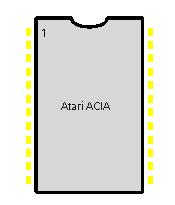

|
|
8.1.10 ACIA
Atari Custom ACIA
In einigen Atari Computern befinden sich zwei Asyncrone
Kommunikations Adapter des Typs 6850. Einer der beiden bedient dabei
die Midi- der andere die Tastaturschnittstelle. Der ACIA-Chip
enthält einen kompletten Sende- und Empfangsteil nach RS232.
Empfänger und Sender dürfen hierbei mit unterschiedlicher
Taktrate betrieben werden.
Vom ST über den TT bis zum Falcon werden die ACIA's aller Regel nach mit 500Khz Takt versorgt um z.B an der Midischnittstelle mit 31250 B/Sec und beim Keyboard mit 7815.5 B/Sec Daten übertragen zu können. Es geht auch schneller, ist bei den Ataris aber auf die genannten Transferraten so festgelegt. Pinbelegung der ACIAs im ST und im Falcon F030: PIN FUNKTION ST/FALCON __________________________________________________________________________ 1 Vss Versorgungsspannung +5V 2 RxData Empfang seriell 3 RxCLK Taktrate für Empfang 4 TxCLK Taktrate für Senden 5 RTS- Ready to Send 6 TxData Sendedaten 7 IRQ- Interrupt Request 8 CS0 Chipselekt 0 9 CS2- Chipselekt 2 10 CS1- Chipselekt 1 11 RS 12 Vcc 13 R/W- Lese- u- Schreibleitung 14 Enable Chipenable 15 D7 16 D6 17 D5 18 D4 19 D3 20 D2 21 D1 22 D0 Datenbus 23 DCD- 24 CTS- Clear to Send __________________________________________________________________________ Kommen wir nun zu den Funktionsbaugruppen des ACIA-Bausteins:
Hier fehlt noch etwas.
 Abbildung 1 - Atari ACIA
Custom Chips (c) Atari Corp.
|
|
|